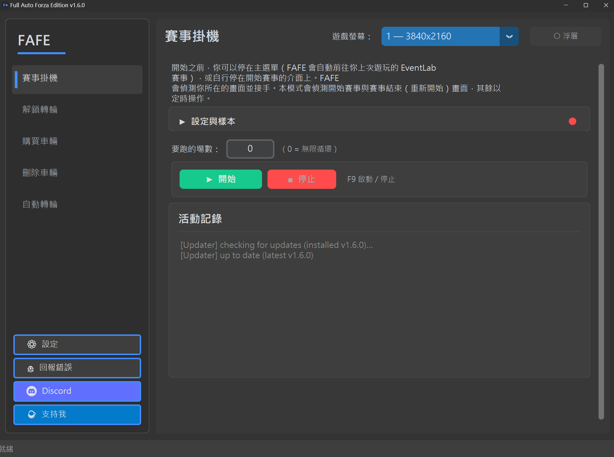
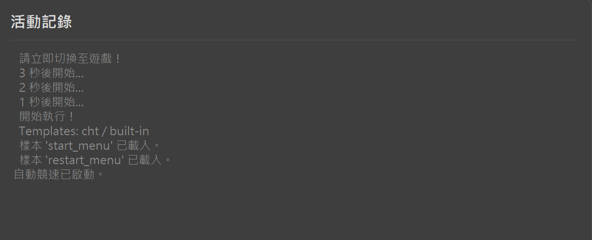
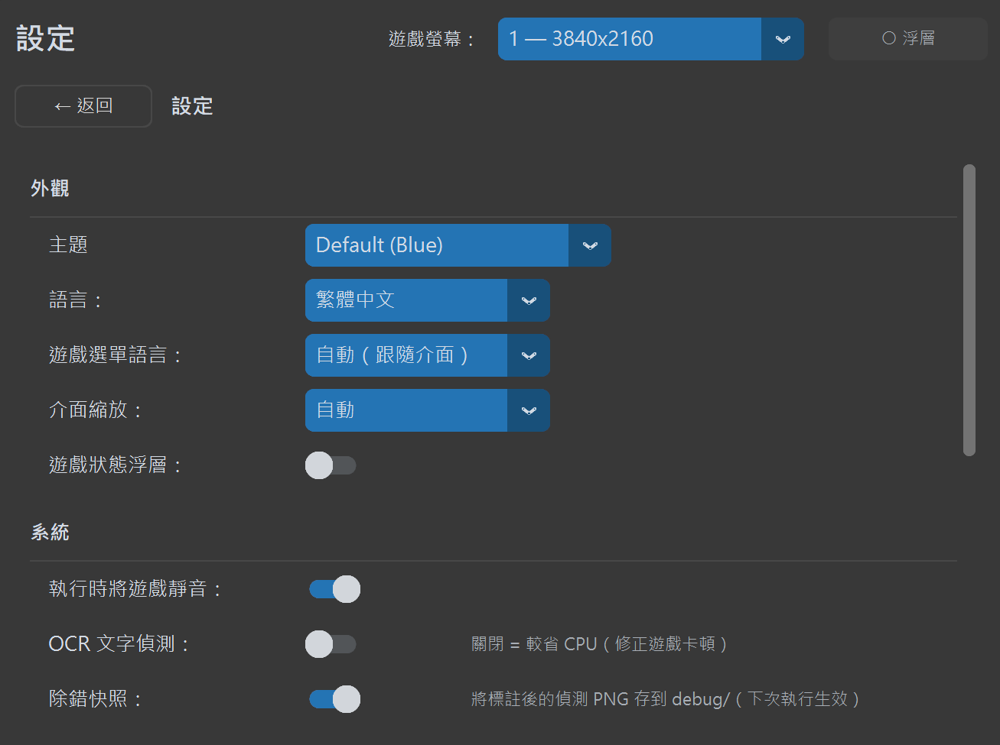

Full Auto Forza Edition
Forza Horizon 6 自動化工具 · 競速掛機、22B 解鎖、自動購車、自動轉輪、刪除舊車，五大模式全自動
🏁 自動掛機刷技術點
⭐ 自動解鎖22B轉輪
🛒 批次自動購車
🎡 自動轉輪（超級／一般）
🗑️ 刪除已使用車輛
🌏 繁體中文 / English
🖥️ 支援多螢幕
Forza Horizon 6 自動化工具 · 競速掛機、22B 解鎖、自動購車、自動轉輪、刪除舊車，五大模式全自動
Full Auto Forza Edition 是專為 Forza Horizon 6 玩家設計的自動化工具，透過截圖辨識與模擬輸入，將五大重複性任務完全自動化——競速掛機刷技術點、解鎖 22B 熟練度、批次購買任何可購買車輛、自動轉動超級或一般幸運轉盤（含重複獎勵處理），以及刪除已使用車輛。工具會直接讀取遊戲視窗並透過視窗訊息輸入，因此遊戲失去焦點、被其他視窗遮擋，甚至在背景執行時也能運作。
不需要修改遊戲檔案，不需要注入任何程式碼。工具只是模擬鍵盤與滑鼠操作，就像真人在玩一樣。

自動偵測比賽開始、結束、重新開始，全程無需手動操作。W 鍵自動按住，比賽結束自動重啟。
在設定的格狀圖中規劃要解鎖的熟練度節點，並用車庫格選擇要處理的車輛範圍；工具以鍵盤導航逐車由上而下進入、開啟熟練度、解鎖節點，每輛車完成後自動移往下一輛，無限循環。
先在車輛收藏中開啟目標車輛，即可批次購買任何可購買車輛；從主選單開始則使用 22B-STI 自動預設路線。
從「我的 HORIZON」選單自動轉動超級或一般幸運轉盤，偵測畫面提示後領取獎勵（超級輪盤一次領取全部 3 個），並自動處理重複車輛（加入車庫或賣出），無限循環直到停止。
自動逐一刪除車庫中的車輛。刪除後遊戲自動選取下一輛，無需導航，無限循環直到停止。
內建偵測樣本並依你的解析度自動縮放，競速、購買、自動轉輪皆開箱即用、無需擷取；進階用戶仍可自定義。
完整支援繁體中文與 English 介面，切換語言後自動重啟套用，設定即時儲存。
啟動／停止鍵與截圖鍵均可自定義。預設 F9 啟停、CAPS LOCK 截圖，點選按鈕後直接按下新按鍵即可更換。
可選擇遊戲所在的螢幕，支援超寬螢幕，設定儲存後下次啟動自動套用。
工具直接讀取遊戲視窗並透過視窗訊息送出操作，遊戲失去焦點、被其他視窗遮擋或在背景時皆可運作——可一邊掛機一邊用電腦做別的事。內建保活機制避免遊戲在背景自動暫停。
一篇完整說明掛機競速、刷錢、技能點、22B 熟練度、幸運轉盤、設定與疑難排解的指南。
從掛機競速、熟練度解鎖、幸運轉盤到車庫清理，完整說明公開版使用流程。
設定螢幕、樣本、語言與基本操作。
準備並重複執行 EventLab 競速。
設定熟練度路徑與車庫區塊。
批次購買自行選擇的車輛，或使用 22B-STI 主選單預設路線。
安全選擇並刪除確認過的車庫範圍。
執行幸運轉盤並處理重複車輛。
解決輸入、時間與偵測問題。
使用並調整浮動狀態視窗。
建立並分享可協助診斷的 F12 報告。
了解外觀、快捷鍵與時間控制。
了解偵測與樣本比對的進階機制。
在右上角的「遊戲螢幕」選單選擇遊戲所在的螢幕。偵測樣本皆已內建並自動依解析度縮放——競速、購買、自動轉輪免擷取，開箱即用。
切換到 Forza Horizon 6，讓遊戲停在正確的畫面。回到 Full Auto Forza Edition，點選「▶ 開始」或按 F9。工具會倒數 5 秒讓你切換回遊戲。
工具會全自動執行。執行紀錄即時顯示在畫面下方的記錄區。想停止時，按 F9 或點「■ 停止」即可立即中止。

從左下角側邊欄的「設定」開啟設定面板，可調整：
每個設定旁都有 ? 說明按鈕，點擊即可查看詳細說明。所有設定變更即時儲存，無需重啟。若遊戲在較慢的電腦上漏接按鍵或點擊，調高「按鍵等待」和「點擊等待」值即可解決。

本工具僅模擬鍵盤與滑鼠輸入，不修改遊戲記憶體或檔案。儘管如此，使用任何自動化工具都存在被封號的風險，請自行評估。